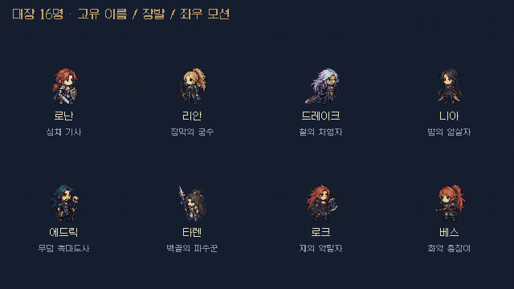

Tracefolio REPORTS & ISSUES
Tracefolio REPORTS & ISSUES 캠프 가디언작업 결과
캠프 가디언작업 결과대장·부하 8종씩 확장과 고유 이름·장발 디자인
검증 대기신규 대장8명/부하8종을 추가하고 기존 대장8명/부하12종을 장발·머리색·노출된 얼굴로 갱신했습니다. 총 대장16명/부하20종입니다.
작업 결과
원본·프롬프트·정규화 출력·런타임·저장·편집 씬을 저장했고 실제 Godot/OpenGL 렌더225프레임과 두 출정에서8기믹 발동을 확인했습니다. 배포 빌드는 미실행입니다.
변경 내용
적용 내용
금지어 정책v5와 강철 검사 표시명을 반영했습니다. 대장 name에 고유 인명, title에 직업명을 분리했습니다. 기존8명은 로난·리안·드레이크·니아·에드릭·타렌·로크·베스, 신규8명은 루시안·브레나·이네스·오델·가릭·실라스·베른·모르겐입니다. 신규 부하 군악수·결계 수호병·야전 의무병·약초 치유사·박격포병·장총 저격병·도약 자폭병·사슬 포획병을 추가했습니다.
찬가 공격력25%/5초, 최대체력20% 보호막/5초, 직접28%치유,4%/초 지속치유6초,5~15칸 고정 조준 포격,16칸 직선 저격,5칸 감지 도약 자폭/10초 부활,사슬 당김/보스 이동 면역을 공유 데이터로 연결했습니다. 동일 버프·보호막·회복 지대의 중첩을 막았습니다. 시전 취소·실제 착탄·담당 구역·대장별 기여·장비/기본공격 성장과 연결했습니다. 편성4명·대장당 부하3명은 유지합니다.
기존/신규 전원 총36종을 노출된 얼굴·긴 머리·묶음/땋음·다양한 머리색으로 구분하고 방패는 방어 병과에 집중했습니다. 내장 imagegen61개 원본/실제 프롬프트와 이전 출력을 보존했습니다. 대장46px/80×80,부하36px/64×64,좌우 출력과 정규화를 유지합니다. 별도 호흡 대기8자세, 기존 대장 전용 공격24자세, 처형자 검 끌기16자세도 새 외형으로 동기화했습니다. 제작 가이드·스타일·편집 미리보기·마을 경비 조명도 갱신했습니다.

검증
Godot4.7.2/GTX970 OpenGL 실제 렌더225프레임,실행 종료0. 대장16/부하20 외형 갤러리와 신규8대장/8부하의 두 편성을 실행했습니다. 두 편성 모두8기믹 started/released 로그와 포격·저격·자폭·사슬 impact를 확인했습니다. 자폭병이10초 부활 뒤 재돌격했습니다. 임시 저장 재로딩 class_id=artillerist/대장4/부하8/error 빈값,데이터 연결 errors=[]입니다. 대장 기본/시전16×48,부하20×24,호흡16×8,기존 전용공격8×24,검 끌기16자세 원본 추출에서 시트별 고유 해시를 확인했습니다. 용어 검사234파일 금지어0건. 최종 성장/공속 연결 후 같은 출정 로직으로 컴파일·실행을 확인했습니다. 요청 없는 별도 자동 테스트·전체 회귀는 작성/실행하지 않았습니다.
남은 사항
장기 전투 밸런스·전체 기존 스킬별 FX 부착점 정밀 대조·사람의 최종 디자인/청감 평가는 미확인입니다. 공용 음원/PixelFX는 기존 프로젝트 리소스를 공유합니다. Windows 내보내기·게임 배포는 미실행입니다. 보고서 중앙 등록·푸시·배포·HTTPS 상태는 별도 확인합니다.
작업 시간
- 제안 시간: 2026-11-18 14:55:56 KST 시작. 최초40
60분,기존 전원 외형 수정 반영 후6090분 예상. - 실제로 완료된 시간: 구현·원본/출력 저장·실제 렌더·최종 실행 확인 완료2026-11-18 15:33:35 KST(실측37분39초). 중앙 등록·배포 확인은 이후 별도 진행합니다.
- XERJ: 미사용 — rg·실제 데이터/소스·내장 imagegen 원본·정규화/프레임 해시·실제 Godot 실행/렌더와 임시 저장 재로딩을 사용했습니다.